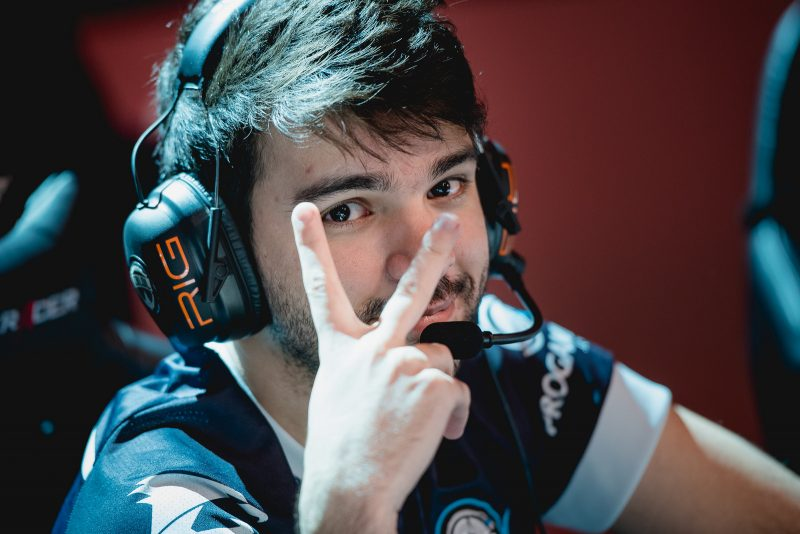

Streamer de LoL Gustavo "Minerva" de Queiroz é Alvo de Ataques Homofóbicos
Por: Luka Rubino
O streamer de League of Legends Gustavo de Queiroz, mais conhecido como Minerva, foi vítima de um ataque homofóbico durante uma transmissão ao vivo. Em uma série de comentários maliciosos, um usuário o chamou de "anomalia genética" por ser gay, causando indignação na comunidade de gamers. Minerva, que é um dos criadores de conteúdo mais populares do cenário de e-sports, recebeu apoio massivo de outros streamers e de seus seguidores, que repudiaram a atitude preconceituosa. O episódio coloca em destaque a necessidade de mais respeito e tolerância no universo dos jogos online.
O incidente ocorreu enquanto Minerva jogava uma partida de LoL e interagia com o chat. Um usuário, escondido atrás de um perfil anônimo, começou a fazer comentários ofensivos sobre a sexualidade do streamer. As mensagens, que se tornaram cada vez mais agressivas, culminaram no insulto homofóbico. Minerva, que sempre foi aberto sobre sua identidade, manteve a calma, mas expressou sua frustração com a falta de respeito. "É lamentável ver que, em pleno século XXI, ainda temos que lidar com esse tipo de preconceito. Eu sempre busquei criar um espaço seguro e acolhedor para todos, mas parece que ainda há muito o que mudar", disse o streamer aos seus seguidores.
O caso de Minerva ganhou repercussão além do universo dos games. Personalidades e veículos de mídia se uniram em solidariedade ao streamer, condenando a homofobia e a cultura de ódio na internet. A plataforma de streaming Twitch, onde ocorreu o ataque, foi pressionada a adotar medidas mais rígidas para coibir comentários preconceituosos. O episódio com Minerva evidencia que a homofobia ainda é um problema sério no ambiente digital, e que a luta por um ambiente mais seguro e inclusivo para a comunidade LGBTQIA+ ainda tem um longo caminho a percorrer.